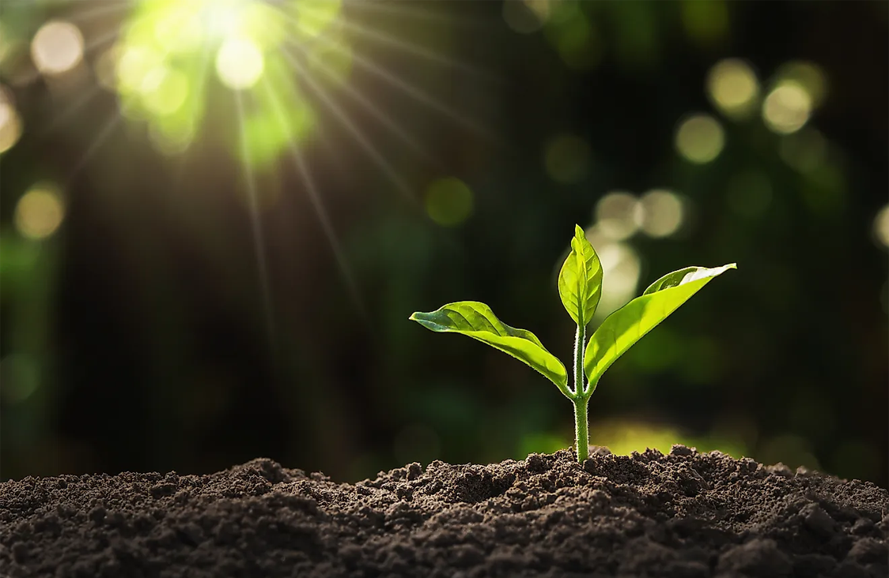
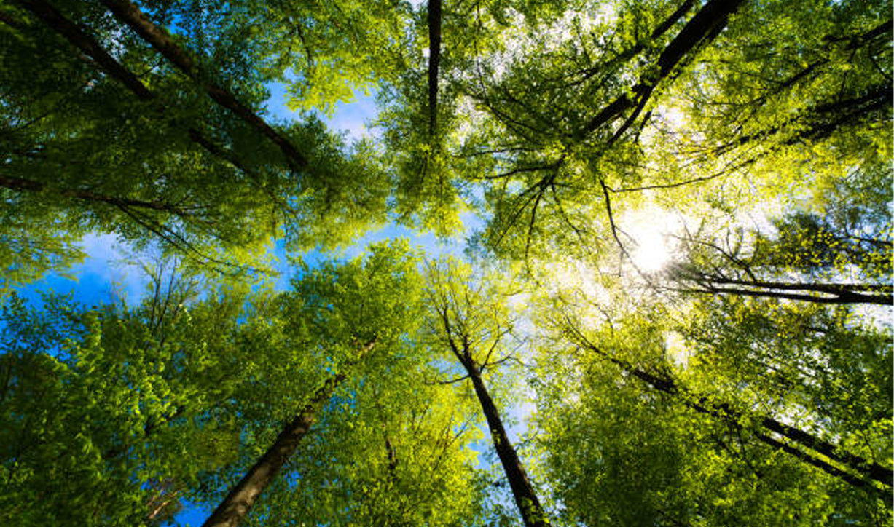

My TerraCred Story - How TerraCred Changed My Life

- Diya Bhardwaj
How I Found Out
From the moment I joined TerraCred, I felt an immediate connection with a network of like-minded individuals dedicated to making a positive impact on the planet. The platform's community feature allowed me to engage with others who were equally committed to environmental causes, sharing ideas and collaborating on sustainability projects.In addition to the community feature, BetterWorldNow also offered a
variety of resources and tools to help me take action. Their guides
on sustainable living and reducing waste were invaluable, and I
loved the fact that I could track my progress and earn rewards for
my efforts.
One of the most profound impacts of TerraCred has been the sense of responsibility it fostered within me. Realizing that a community depended on my contributions pushed me to stay engaged and intensify my efforts.
With TerraCred, I am convinced that I am contributing to meaningful change. By engaging in actions centered on environmental protection, social equity, and active citizenship, I am part of a worldwide effort to bring about positive transformation. Most importantly, it reassures me that I am not undertaking this mission alone. Together, we have the power to shape a more sustainable and equitable world.
My Story
As someone deeply passionate about environmental and social causes, I often felt powerless in the face of such vast global challenges. The complexity and enormity of these issues made it difficult to see how I could genuinely contribute to change. This feeling persisted until I came across TerraCred. This platform transformed my approach, showing me how even actions can accumulate to create significant benefits.
TerraCred
More on The Blog
About
Contributors
Write For Us
Contact Us
The Team
Jobs
Privacy
Our Partnerships
Organizations
NGOs
Press
FOLLOW ME


About usLeaderBoardResourcesMy Profile BlogLeaderBoard
BlogLeaderBoard
TerraCred